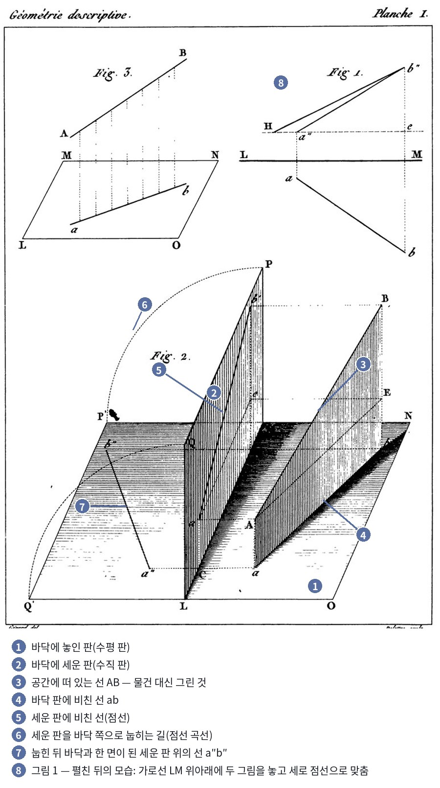
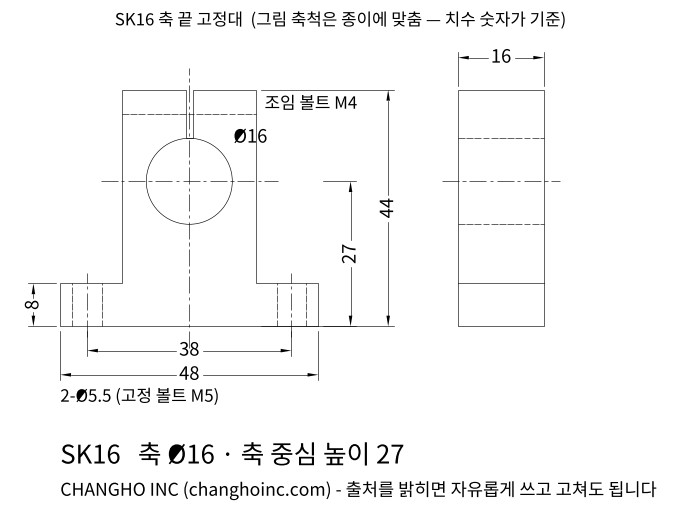
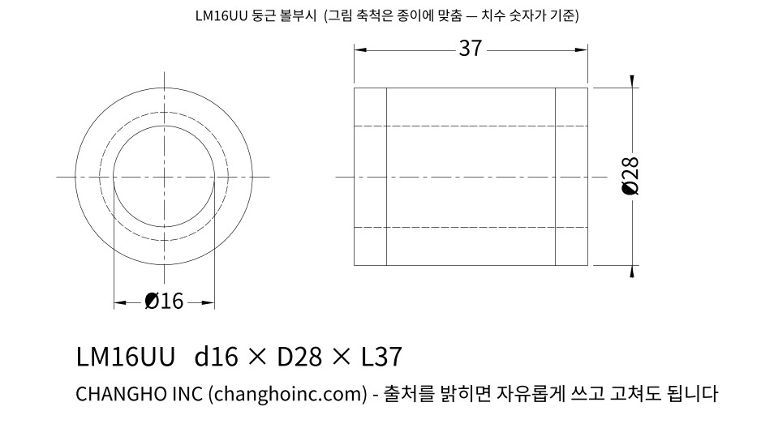

아래 그림의 물건 세 개를 앞에서 보면 모두 똑같은 ㄴ자 모양입니다. 그런데 위에서 보면 왼쪽 기둥이 네모난 것, 둥근 것, 세모난 것으로 서로 다릅니다. 앞에서 본 그림 한 장만 받으면 셋 중 어느 물건을 만들어야 하는지 알 수 없습니다.
그래서 도면에는 물건을 여러 방향에서 본 그림을 함께 그립니다. 앞에서 본 그림으로는 가로 길이와 높이를, 위에서 본 그림으로는 가로 길이와 깊이를, 옆에서 본 그림으로는 깊이와 높이를 알 수 있습니다. 세 그림을 맞춰 읽으면 대부분의 물건은 가로·깊이·높이와 모양을 알 수 있습니다.
세 그림을 얻는 방법은 물건을 투명한 상자 안에 넣었다고 생각하면 쉽습니다. 상자 밖에서 앞 판을 똑바로 들여다보면 앞 판에 물건의 앞모습이 비칩니다. 위 판에는 위에서 본 모습이, 오른쪽 판에는 오른쪽에서 본 모습이 비칩니다. 이 세 모습을 그대로 옮겨 그린 것이 각각 정면도(앞에서 본 그림), 평면도(위에서 본 그림), 우측면도(오른쪽에서 본 그림)입니다.
이때 눈은 판과 직각 방향으로, 물건의 모든 점을 똑바로 바라본다고 생각합니다. 그래서 판과 나란한 면은 크기와 모양이 줄거나 비뚤어지지 않고 실제 그대로 그려집니다. 「정투상」이라는 이름도 이렇게 판에 직각으로 바로 비춘다는 뜻에서 왔습니다. 사진은 가까운 것이 크게 찍히지만, 정투상으로 그린 그림은 가깝든 멀든 같은 크기로 그려지기 때문에 그림에서 길이를 바로 잴 수 있습니다.
물건을 서로 직각인 판에 비춰 그리는 이 방법은 18세기 프랑스 수학자 가스파르 몽주가 학교 강의로 정리했고, 1799년에 『화법 기하학(Géométrie descriptive)』이라는 책으로 나왔습니다. 책 끝에 실린 첫 번째 도판에는 바닥 판과 세운 판에 비친 모습을 그린 다음, 세운 판을 바닥 쪽으로 눕혀 한 장의 종이로 펼치는 그림이 실려 있습니다. 오늘날 도면의 세 그림도 같은 생각에서 나왔습니다.

비친 모습을 그린 상자를 앞 판을 중심으로 펼쳐 한 장의 종이로 만든다고 생각해 봅니다. 위 판은 위로 젖혀 펼쳐지고, 오른쪽 판은 오른쪽으로 젖혀 펼쳐집니다. 그 결과 평면도는 정면도 바로 위에, 우측면도는 정면도 바로 오른쪽에 놓입니다. 한국의 기계 도면은 이 배치를 원칙으로 하며, 이 배치를 3각법이라고 합니다.
세 그림은 같은 물건을 그린 것이므로 서로 같은 길이를 나눠 가집니다. 이 관계를 알면 그림 하나에 빠진 선이나 잘못 그린 선을 다른 그림으로 찾아낼 수 있습니다.
| 짝지은 그림 | 같은 길이 | 맞추는 방법 |
|---|---|---|
| 정면도 · 평면도 | 가로 길이 | 위아래로 세로선을 그어 왼쪽·오른쪽 끝과 구멍 자리를 맞춥니다 |
| 정면도 · 우측면도 | 높이 | 좌우로 가로선을 그어 바닥·단·윗면 높이를 맞춥니다 |
| 평면도 · 우측면도 | 깊이 | 평면도에서 가로선을 그어 45도 선에 닿으면 꺾어 내려 우측면도에 옮깁니다 |
평면도와 우측면도를 볼 때 하나 더 기억할 것이 있습니다. 3각법에서는 두 그림 모두 정면도에 가까운 쪽이 물건의 앞쪽입니다. 평면도에서는 아래쪽 가장자리가, 우측면도에서는 왼쪽 가장자리가 물건의 앞쪽입니다. 위 그림에서 구멍은 블록 깊이의 한가운데에 있으므로, 평면도에서는 위아래 가운데에, 우측면도에서는 좌우 가운데에 그려집니다.
상자에는 판이 여섯 개 있으므로 물건은 여섯 방향에서 볼 수 있습니다. 3각법에서는 정면도를 가운데에 두고, 아래에서 본 저면도는 정면도 아래에, 왼쪽에서 본 좌측면도는 정면도 왼쪽에, 뒤에서 본 배면도는 우측면도 오른쪽에 놓습니다.
도면에는 물건을 만드는 데 꼭 필요한 그림만 그립니다. 그림이 많으면 같은 치수를 여러 번 적게 되고, 읽는 사람이 어느 그림을 보아야 할지 찾기 어려워지기 때문입니다. 그림 수는 물건 모양에 따라 정합니다.
정면도는 그림 중에서 가장 먼저 정합니다. 물건의 모양과 특징이 가장 잘 드러나는 방향, 숨은선이 적게 나오는 방향을 정면으로 고르고, 길쭉한 물건은 가로로 길게 눕혀 그리는 것이 보통입니다. 정면도가 정해지면 나머지 그림은 앞에서 배운 자리에 놓습니다.
그림을 놓는 방법에는 3각법 말고 1각법도 있습니다. 1각법은 물건이 눈과 판 사이에 있다고 보고, 물건 뒤쪽 판에 비친 모습을 그립니다. 그래서 그림의 모양은 3각법과 같지만 놓이는 자리가 반대가 됩니다. 위에서 본 평면도가 정면도 아래에, 오른쪽에서 본 우측면도가 정면도 왼쪽에 옵니다.
한국과 일본의 기계 도면은 3각법을 원칙으로 합니다. 중국과 유럽 여러 나라의 도면은 1각법으로 그려진 것이 많습니다. 수입 기계의 설명서나 부품 도면을 볼 때 3각법이라고 생각하고 읽으면, 위에서 본 그림을 아래에서 본 그림으로, 오른쪽 면을 왼쪽 면으로 잘못 읽을 수 있습니다.
이런 실수를 막기 위해 표제란(도면 오른쪽 아래의 이름·척도를 적는 칸)에는 투상법 기호를 그려 넣습니다. 기호는 원뿔의 위쪽을 잘라 낸 모양(원뿔대)을 옆에서 본 사다리꼴과 끝면에서 본 겹친 원 두 개로 그립니다. 사다리꼴의 좁은 쪽이 원을 향하면 3각법, 넓은 쪽이 원을 향하면 1각법입니다. 처음 보는 도면은 표제란에서 이 기호를 먼저 찾아보시면 됩니다.
창호종합기계 부품 도면 자료실에 올린 부품 도면도 3각법으로 그렸습니다. 두 장을 골라 각 그림이 어느 방향에서 본 것인지 찾아봅니다. 두 도면 모두 둥근 구멍이나 둥근 몸통이 있어 그림 두 장으로 그렸습니다.

SK16은 둥근 축의 끝을 잡아 주는 받침입니다. 정면도의 맨 위와 맨 아래가 우측면도의 맨 위와 맨 아래와 같은 높이에 그려져 있어 높이 44 mm가 두 그림에서 맞습니다. 우측면도 가운데의 파선 두 줄은 축이 끼워지는 Φ16 구멍입니다. 옆에서 보면 구멍이 몸통 속에 숨어 있으므로 숨은선으로 그렸고, 파선 두 줄의 높이는 정면도 원의 위쪽 끝·아래쪽 끝과 같습니다. 바닥 쪽 실선은 양옆으로 튀어나온 받침 부분의 윗면입니다.

LM16UU는 둥근 축 위를 미끄러지는 원통 모양 부품입니다. 끝면에서 본 그림에서는 내경 Φ16을, 옆에서 본 그림에서는 외경 Φ28과 길이 37 mm를 읽습니다. 옆에서 본 그림의 파선 두 줄은 속에 뚫린 Φ16 구멍입니다. 이처럼 둥근 부품은 끝면 그림과 옆면 그림 두 장이면 모양과 크기를 모두 나타낼 수 있습니다.
두 도면의 캐드 파일(DXF)과 인쇄용 PDF는 리니어 샤프트·축 끝 고정대 쪽과 리니어 부싱 쪽에서 무료로 받을 수 있습니다. 직접 출력해 정면도와 측면도의 높이가 맞는지 자를 대어 보시면 이번 글의 내용을 바로 확인할 수 있습니다.
위쪽 가운데에 홈이 파이고 세로 구멍 두 개가 뚫린 연습용 블록을 그린 도면입니다. 파란 글자 가·나·다가 붙은 그림을 보고 답을 생각해 본 뒤, 문제를 눌러 확인해 주세요.
가는 평면도, 나는 정면도, 다는 우측면도입니다. 3각법에서는 정면도 위에 평면도가, 정면도 오른쪽에 우측면도가 옵니다.
3각법입니다. 오른쪽 위 투상법 기호에서 사다리꼴의 좁은 쪽이 원을 향하고 있고, 그림도 평면도가 위, 우측면도가 오른쪽에 놓여 있습니다.
가로 70 mm, 깊이 40 mm, 높이 50 mm입니다. 가로 길이는 평면도에, 깊이는 우측면도에, 높이는 정면도에 적혀 있습니다. 평면도와 우측면도에 모두 나타나는 깊이는 어느 한 그림에만 적습니다.
블록 위에서 바닥까지 뚫린 구멍 두 개입니다. 앞에서 보면 구멍이 블록 속에 숨어 있으므로 구멍 하나마다 파선 두 줄로 그립니다. 평면도(가)에서는 같은 구멍이 원 두 개로 보이고, 원과 파선의 가로 위치가 서로 맞습니다.
가운데 홈의 바닥입니다. 홈은 블록 앞에서 뒤까지 뚫려 있지만, 오른쪽에서 보면 홈 오른쪽의 높은 부분에 가려 보이지 않으므로 숨은선으로 그립니다. 이 파선의 높이는 정면도(나)에서 홈 바닥의 높이와 같습니다. 세로 파선 두 줄은 구멍입니다. 두 구멍은 깊이 방향으로 같은 자리에 있어서 오른쪽에서 보면 하나로 겹쳐 보입니다.
정면도 아래에 놓입니다. 그리고 다(우측면도)는 정면도 왼쪽에 놓입니다. 그림의 모양은 그대로이고 자리만 바뀝니다.
다음에 배울 것 — 도면 기초 4 「잘라서 보여 주는 그림(단면도)」: 속이 복잡한 물건은 숨은선이 많아져 읽기 어렵습니다. 물건을 잘랐다고 생각하고 잘린 면을 보여 주는 그림을 살펴봅니다.
궁금한 점을 남겨 주시면 다음 글을 쓸 때 참고하겠습니다.